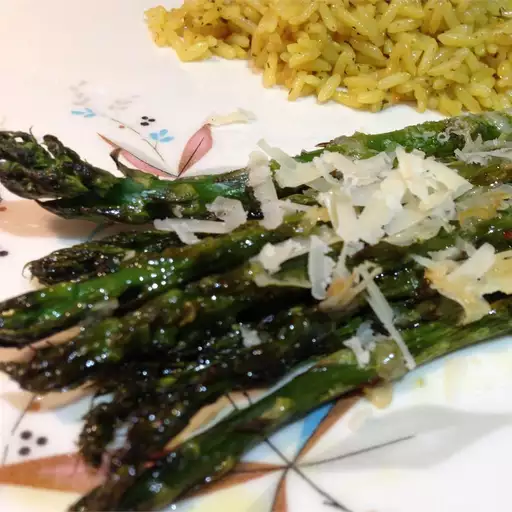

Aspargus with parmesian

A nicely garnished plate of asparagus and parmesian, served with brown rice
A tasty way to consume one of your favorite and very nutritious vegetable.
This dish will appeal to even the most vehement vegetable haters.
Cooked in oil, spiced with salt and garlic, topped with parmesian cheese.
It is almost indistinguishable from a tasty snack,
making it a great side for dinner while trying to be mindful of healthy eating.
Ingredients
- Olive oil
- Asparagus
- Parmesian
- Sea Salt
- Garlic Powder
Steps
- Preheat the oven to 400 degrees F.
- Lubricate glass baking dish with olive oil, or olive oil cooking spray.
- Place asparagus in dish, lightly grease asparagus with oil as well.
- Season asparagus using garlic powder, sea salt, and parmesian
- Roast in oven for approximately 12 minutes, or until fork easily pierces asparagus